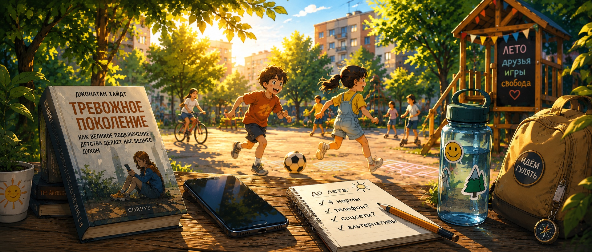
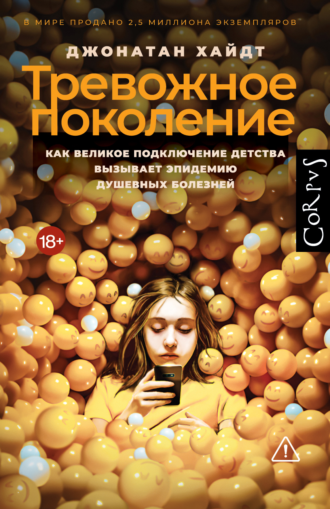

Что делать с детскими смартфонами до лета
К концу мая в каждой семье с ребенком 6-14 лет на столе лежит один и тот же вопрос: как мы устроим экран на лето. Сколько часов в день, что можно смотреть, нужен ли свой телефон, как быть с социальными сетями, что делать с играми.
Этот разговор стал особенно острым в последние полтора года. Джонатан Хайдт выпустил «Тревожное поколение», вокруг книги развернулась академическая полемика, Россия с сентября 2024-го запретила смартфоны на уроках, а Австралия с декабря 2025-го запретила соцсети до 16 лет. Выпуск длинный, потому что тема не вмещается в обычный формат. Главная задача одна: принять до лета решения, которые потом будут работать сами, без ежедневных скандалов.
Что внутри
📚 Три книгиХайдт, Твенге, Лембке
💬 Разговорчто ребенок смотрит, когда никто не видит
🧠 Четыре нормыи что изменили законы
⚖️ Критики Хайдтапочему важно знать обе позиции
🚫 Что не работаетпять родительских стратегий
🌳 Чем заменить экрандвор, парк, дача, район
👀 Что посмотретьWall-E, Ghibli и «Социальная дилемма»
🎧 Что слушатьподкасты и семейное аудио
🎁 Находкиконтроль, таймеры и телефоны
🧺 Заданиеодин день без экранов
📚 Книжка-пятиминутка
Три книги, которые сделали разговор о детях и экране тем, что он есть
взрослым
13+ выборочно
перед семейными правилами
Бестселлеров про детей и экран сейчас десятки. В рекомендации попадают только те, которые реально меняют разговор внутри семьи. Одна книга описывает массовый сдвиг последних 15 лет, вторая дает долгую социологическую перспективу, третья объясняет, как среда с быстрыми удовольствиями цепляет мозг.

3 слоя чтения
Хайдт - что произошло с детством. Твенге - откуда это видно в данных. Лембке - почему лента так трудно отпускает.
Джонатан Хайдт, «Тревожное поколение»
Хайдт называет главный сдвиг «великим подключением детства»: примерно между 2010 и 2015 годами у детей одновременно появились смартфоны, фронтальная камера, круглосуточный интернет и алгоритмические соцсети. Его жесткий тезис: детство, основанное на свободной игре, стало детством, основанным на телефоне.
Самое практичное у Хайдта - четыре нормы: не давать смартфон до старшей школы, не давать соцсети до 16 лет, делать школу свободной от телефонов от звонка до звонка и возвращать детям больше самостоятельной игры в реальном мире.
Corpusстраница русского издания
Лабиринтпоиск бумажной книги
Литреспоиск электронной и аудиоверсии
Anxious Generationсайт книги и материалов Хайдта
Джин Твенге, «iGen» / «Поколение I»
Твенге начала писать про сдвиг подросткового поведения еще в 2017 году, задолго до Хайдта. У нее меньше публицистического напора и больше длинной статистической перспективы: как менялись сон, встречи с друзьями, одиночество, свидания и тревожность у подростков, родившихся после 1995 года.
Анна Лембке, «Дофаминовая нация»
Лембке пишет не специально про детей, но ее книга отлично объясняет, почему ребенок физически не может «просто отложить телефон» после трех часов коротких роликов. Это разговор про мозг, быстрое удовольствие, откат после удовольствия и среду, в которой дофаминовые удары подаются слишком часто.
💬 Повод поговорить
«Что ты смотришь, когда никто не видит»: разговор, к которому не готовы 95% родителей
7-14 лет
30-60 минут
лучше не лицом к лицу
Обычно вместо настоящего разговора про экран происходит одно из двух: упрек «опять в телефоне сидишь» или допрос «покажи, что у тебя там». Первый разговор не дает ребенку ответа. Второй учит прятать историю и заводить вторые аккаунты. Рабочий разговор устроен иначе: это совместный разбор, в котором взрослый тоже признает, что у него самого с экраном не все идеально.
Лучше говорить в машине, на прогулке или на кухне за совместным делом. Начать с себя: «Я тут понял, что половину рабочих перерывов трачу на ленту, и мне это не нравится. А тебе как кажется про твой экран?» Если ребенок сказал «нормально», не давить. Подождать.
7-10 лет
Какое приложение самое любимое и почему? Бывает, что после телефона плохое настроение? Если бы был выбор - час мультиков или час во дворе с друзьями, что бы ты выбрал?
11-14 лет
Сколько ты в телефоне по ощущениям? Какой контент раздражает? Замечаешь, что лента что-то подбирает под тебя? Что было бы, если телефон сломался на неделю?
Что не говорить
«В наше время мы гуляли до темноты», «тебе вообще зачем телефон», «я видел в истории». Это не разговор, а ловушка. История телефона ребенка не для родительского аудита, если вы хотите сохранить канал доверия.
🧠 Полезное
Четыре нормы Хайдта и четыре больших возражения: как держать обе позиции в голове
взрослым
8 минут
перед семейным договором
Хайдт построил книгу вокруг двух схем: четыре вреда телефонного детства и четыре нормы, которые он предлагает в ответ. Эти схемы стоит знать даже тем, кто с ним спорит: современный разговор о детях и экране идет именно в этих терминах.
1Социальная депривация
Меньше встреч лицом к лицу, меньше самостоятельной практики общения.
2Лишение сна
Телефон в спальне, уведомления, подсветка и привычка проверять ленту перед сном.
3Фрагментация внимания
Уведомления дробят концентрацию и делают длинное чтение физически труднее.
4Зависимость
Алгоритмы дают подкрепление с переменной частотой, как игровые автоматы.
Четыре нормы
- Нет смартфону до 14 лет. Телефон для звонков - да, интернет, игры, соцсети и фронтальная камера - позже.
- Нет соцсетям до 16 лет. Не потому что подросток плохой, а потому что среда сделана для взрослого мозга.
- Школа без телефонов от звонка до звонка. Не только «не на уроке», а весь школьный день без постоянного кармана с уведомлениями.
- Больше свободной игры и независимости. Если экран убрать и ничего не дать взамен, будет не освобождение, а скука и злость.
Что говорят педиатры и законы
AAP в практических материалах про семейный медиаплан говорит мягче Хайдта: важны качество контента, контекст просмотра и договоренность внутри семьи. Хорошая метафора - экран как десерт: не яд, но и не основа питания.
В России с 1 сентября 2024 года школьникам запрещено использовать мобильные устройства на уроках. В Австралии с 10 декабря 2025 года платформы обязаны не допускать пользователей младше 16 лет к социальным сетям. В обоих случаях государство фактически признает: вопрос уже не только семейный.
⚖️ Полезное
Что говорят критики Хайдта: почему этот блок обязательно нужно прочитать
взрослым
5 минут
без паники
Книга Хайдта вызвала одну из самых громких академических дискуссий о подростках и технологиях. И полностью вставать на одну сторону, не зная аргументов другой, - плохая работа родителя. Особенно потому, что наука здесь правда не определилась.
29 марта 2024 года в Nature вышла жесткая рецензия Candice Odgers, профессора психологии Калифорнийского университета в Ирвайне. Ее главный тезис: Хайдт слишком уверенно превращает корреляции в причинность. Тревожность подростков росла одновременно с временем в смартфоне, но это еще не доказывает, что одно вызвало другое.
Хайдт, в свою очередь, признавал, что его публичные выводы идут впереди строгой науки, но настаивал на принципе осторожности: если есть риск, разумно отложить соцсети до 16 лет, не ожидая идеального исследования через десять лет.
Практический вывод
Из критики не следует «соцсети безопасны». Из нее следует: не надо принимать решения из паники. Если ребенок спит, учится, общается офлайн и сам уходит во двор, наблюдайте. Если видны плохой сон, зависание, невозможность оторваться и уход от живого общения, нормы Хайдта становятся хорошим каркасом.
🚫 Полезное
Что не работает: пять родительских стратегий, которые делают экран еще ценнее
взрослым
5 минут
перед разговором с ребенком
Если вы заметите себя в одном из пунктов ниже, это не приговор. Это значит, что у вас примерно та же интуитивная стратегия, что у большинства родителей. Просто она не работает так, как нам хочется.
1Тотальный запрет
Ребенок получает телефон обходным путем и теряет возможность учиться с вами.
2Экран как валюта
Если планшет - награда, его субъективная ценность резко растет.
3Только часы
Час Wikipedia и час TikTok - не одно и то же.
4Тайная слежка
Она отслеживает, но разрушает доверие и учит прятаться лучше.
5Двойные стандарты
Телефоны за ужином не работают, если взрослые сами в телефоне.
Что работает вместо: постепенный ввод, открытый родительский контроль, разговор о содержании, правила для всех членов семьи и отдельная категория экранного времени, не привязанная к наказаниям и наградам.
🌳 Игры на улице
Чем заполнить время, освободившееся от экрана
4-14 лет
двор, парк, дача
от 20 минут до дня
Любой разговор про сокращение экрана упирается в вопрос «а чем тогда заняться?». Если экран отобрали, а взамен ничего не дали, ребенок не идет счастливо читать. Он злится, и через час экран возвращается с двойной силой. Поэтому четвертая норма Хайдта - не про запреты, а про возврат свободной игры и независимости.
4-7 лет
«Сегодня мы охотники» на три цвета во дворе; лупа для рассматривания трещин, листьев и песка; бумажные кораблики после дождя.
7-10 лет
Велосипед как новый день, «бинго района» 5 на 5 клеток, дворовый волейбол через скакалку вместо сетки.
11-14 лет
Карта собственного района, велопоход на день с маршрутом и бутербродами, скейт, ролики или самокат с нормальной защитой.
Идея для всех возрастов
Одно воскресенье в месяц без телефонов у всех. На завтрак сложили телефоны в коробку, вечером забрали. Внутри может быть лес, дача, гости, выставка или просто длинная прогулка. Главное - взрослые тоже без телефонов.
👀 Посмотреть
Wall-E, «Шепот сердца» и «Социальная дилемма»: три фильма про экран, которые работают по-разному
4+, 10+, 13+
полнометражное кино
с разговором после
Лобового кино про детский смартфон почти нет. Зато есть фильмы, которые показывают жизнь, где экран не центр, или наоборот - где экран уже стал центром. Их сила в том, что они не нравоучительные.
Wall-E, 2008
Pixar снял самый сильный визуальный комментарий к теме еще до Хайдта: люди на космическом корабле сидят в креслах с экранами перед лицом, почти не ходят и почти не разговаривают напрямую. Дети видят сказку про робота, подростки уже замечают устройство мира.
«Шепот сердца», 1995
В контексте смартфонов это кино работает заново: подростки узнают друг о друге через библиотечные карточки, записки, случайные встречи и живые разговоры. Это окно в мир, где отношения строятся без мессенджера.
«Социальная дилемма», 2020
Документальный фильм Netflix стоит смотреть только вместе с подростком 13+. Он показывает механику удержания внимания изнутри и после него проще говорить не «телефон плохой», а «давай посмотрим, как именно это сделано».
🎧 Послушать
Аудио вместо ленты: два подкаста для родителя и подборка для всей семьи
аудио
от 30 минут
дорога, кухня, прогулка
Для родителя здесь важен не «правильный» подкаст, а спокойный тон. Без морализаторства, без крика про потерянное поколение, без ленты новостей, после которой взрослому самому нужен родительский контроль.
🎁 Находки
Пять конкретных вещей, которые помогают семье с экраном
от бесплатно
до 25 000 рублей
на лето
1Family Link и Screen Time
Бесплатно, открыто, после разговора с ребенком о том, что именно видит родитель.
2Кнопочный телефон
Если ребенку 7-10 лет нужен звонок родителю, ему не обязательно нужен смартфон.
3Кухонный таймер
Физический звонок иногда работает лучше, чем родительское «все, выключай».
4Календарь экрана
Ребенок сам отмечает, сколько было экрана. Через месяц видна реальная картина.
5«Глупые» телефоны
Light Phone, Punkt, Mudita - нишевый вариант для подростка, который сам устал от ленты.
🧺 Маленькое задание выпуска
Один день без экранов, к воскресенью
от 4 лет
целый день
дома или вне дома
К ближайшему воскресенью договоритесь всей семьей: один день без телефонов и планшетов. У всех, включая взрослых. На завтрак собираете телефоны в корзинку, ставите ее в шкаф, забираете вечером. Внутри дня может быть что угодно: лес, дача, прогулка, гости, выставка, кухня.
К концу дня соберитесь и поделитесь: что было трудно, что было хорошо, на чем поймали себя. Без обвинений и без героизма. Просто разговор о реальном опыте.
Если выдержали один день без телефона, выпуск выполнен. Вы великолепны.
Слойка в Telegram
Погодный бот и приложение, которое помогает быстро понять, как одеть ребенка перед прогулкой. А дальше туда же удобно будет отправлять и новые выпуски.
Открыть @sloika_ibot